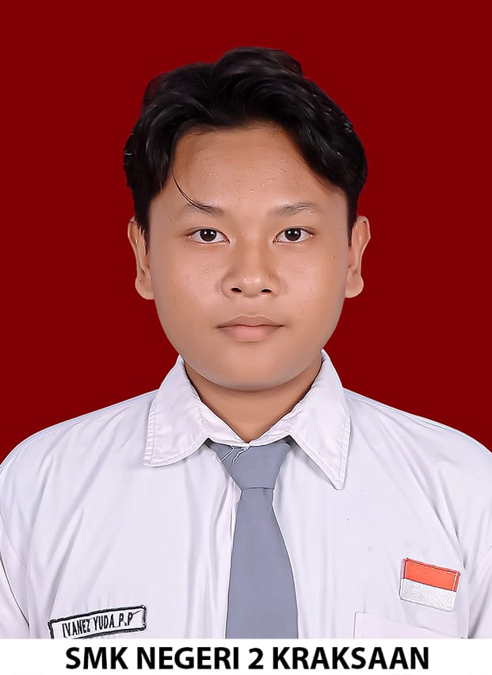

Pengembang perangkat lunak lulusan RPL yang berfokus pada Frontend Development, serta berpengalaman dalam Backend Development dan UI/UX Design.

Saya adalah lulusan SMKN 2 Kraksaan jurusan Rekayasa Perangkat Lunak (RPL). Memiliki fondasi yang kuat dalam Frontend Development yang saya pertajam saat magang di perusahaan Softwarehost. Selain membangun tampilan aplikasi yang intuitif, saya juga memiliki kemampuan di bidang Backend Development dan UI/UX Design.
Kombinasi bahasa pemrograman, framework, dan skill desain yang saya gunakan.
Membangun antarmuka web dan aplikasi seluler yang responsif dan interaktif.
Mengelola logika server, struktur basis data, serta arsitektur API.
Merancang tata letak visual dan pengalaman pengguna yang menarik.